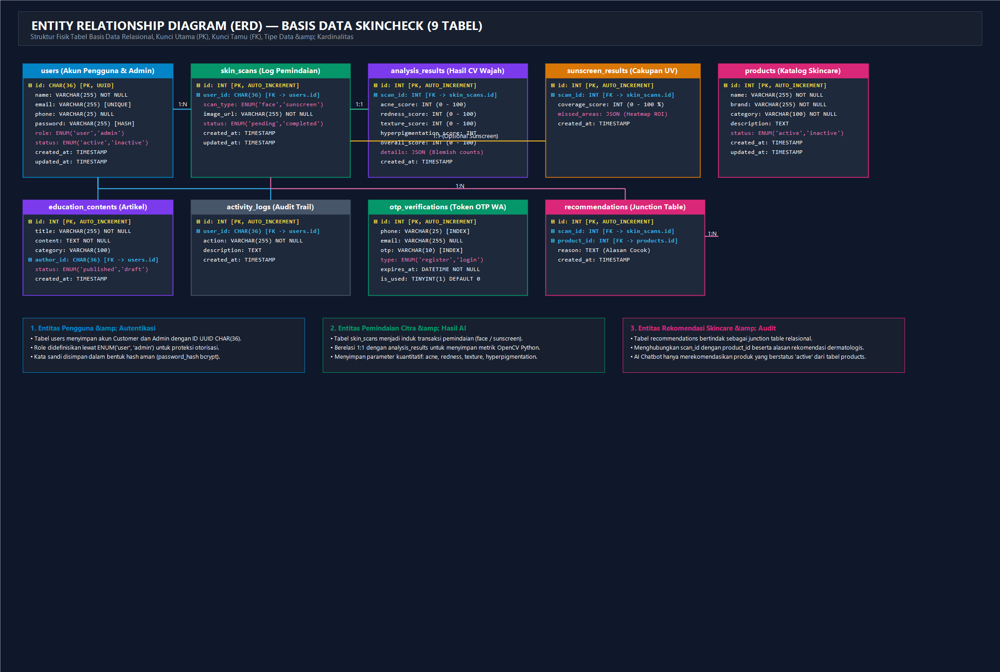

LAPORAN AKHIR REKAYASA PERANGKAT LUNAK
SISTEM PEMANTAU KESEHATAN KULIT WAJAH DAN ASISTEN REKOMENDASI SKINCARE BERBASIS ARTIFICIAL INTELLIGENCE (SKINCHECK)
Disusun untuk Memenuhi Persyaratan Ujian Akhir Semester (UAS) Mata Kuliah Rekayasa Perangkat Lunak
| Nama Mahasiswa | : Wichal Aditiya Purnama |
| NIM | : 41257167 |
| Nama Kelompok | : Cangkol Perangkat Lunak |
| Repositori GitHub | : github.com/aditiyawichal-sys/APSkincek |
| Video Demo (YouTube) | : https://youtu.be/IAnv29EBfus |
RINGKASAN EKSEKUTIF
SkinCheck (APSkincek) merupakan platform perangkat lunak inovatif berbasis web yang dirancang untuk mengatasi permasalahan tingginya biaya pemeriksaan kesehatan kulit wajah klinis, maraknya penggunaan tabir surya (*sunscreen*) yang tidak merata, serta kesalahan pemilihan produk perawatan akibat tren viral. Sistem ini mengintegrasikan arsitektur Model-View-Controller (MVC) pada backend PHP 8.2 dengan microservice cerdas berbasis Python Computer Vision (OpenCV) dan Node.js Multi-LLM Chatbot (Groq, Gemini, DeepSeek).
Sistem dilengkapi dengan 49 suite pengujian unit test otomatis dan alur kerja Continuous Integration / Continuous Deployment (CI/CD) melalui GitHub Actions untuk menjamin kualitas perangkat lunak secara berkelanjutan.
BAB I: PENDAHULUAN
1.1 Latar Belakang
Kerusakan kulit akibat radiasi UV dan lesi peradangan (jerawat dan eritema) memerlukan penanganan sejak dini. Sayangnya, mayoritas masyarakat kesulitan mengevaluasi progres kulitnya secara objektif tanpa alat klinis mahal. Di sisi lain, chatbot AI generik sering kali memberikan rekomendasi obat resep keras tanpa kendali. SkinCheck hadir sebagai solusi terpercaya yang menjembatani evaluasi visual biologis dengan rekomendasi produk perawatan yang aman dan terikat katalog resmi basis data.
1.2 Tujuan Proyek
- Membangun platform pemantau kesehatan kulit non-invasif via kamera browser WebRTC.
- Mengembangkan pipeline Computer Vision untuk menghitung skor jerawat, kemerahan, tekstur, dan persentase cakupan tabir surya.
- Mengintegrasikan chatbot AI terhubung database MySQL dengan auto-failover antar-penyedia model LLM (uptime 99.9%).
- Menerapkan prinsip Software Quality Assurance melalui Unit Testing dan CI/CD GitHub Actions.
BAB II: SPESIFIKASI KEBUTUHAN PERANGKAT LUNAK (PRD)
2.1 Matriks 10 Modul Kebutuhan Fungsional (P0 & P1)
| No | Modul | Spesifikasi Kebutuhan Fungsional (FR) | Prioritas |
|---|---|---|---|
| 1 | Autentikasi & OTP | Registrasi, login, password hash bcrypt, token 6 digit WhatsApp OTP via Fonnte Gateway. | P0 |
| 2 | Onboarding Profil | Kuesioner biologis tipe kulit dan keluhan utama (jerawat, kemerahan, pori, noda). | P0 |
| 3 | Customer Dashboard | Kartu Overall Health Score (0-100), quick actions, rekomendasi rutinitas AM/PM. | P0 |
| 4 | Kamera WebRTC | Akses navigator.mediaDevices, panduan oval wajah, validasi Canvas API, enkripsi berkas. | P0 |
| 5 | AI Vision Pipeline | Subprocess OpenCV analyze.py: Haar Cascade, HSV/YCrCb blemish, CIELAB a* eritema, Laplacian tekstur. | P0 |
| 6 | Sunscreen Coverage | Perhitungan persentase cakupan (0-100%) dan JSON koordinat area yang belum terlapisi (heatmap). | P0 |
| 7 | Rekomendasi Skincare | Pencocokan diagnostik dengan tabel products berstatus active (Anti-Halusinasi). | P0 |
| 8 | Chatbot AI & Failover | Server Node.js port 3000, integrasi kueri MySQL, privasi bertahap, failover < 300ms jika 402/429. | P0 |
| 9 | Admin Panel & Keys | Monitoring metrik pengguna & scan, CRUD katalog produk, live latency test API AI. | P0 |
| 10 | Scan History & Tren | Linimasa riwayat pemindaian terdahulu dan visualisasi grafik peningkatan skor. | P1 |
BAB III: PERANCANGAN SISTEM & DIAGRAM UML
3.1 Use Case Diagram (4 Aktor Sistem)
Diagram Use Case resmi mendefinisikan 4 aktor: Customer / User, Super Admin, Asisten AI (LLM + RAG), dan Kode OTP (Layanan Eksternal Fonnte).
 Gambar 3.1 Use Case Diagram Resmi SkinCheck
Gambar 3.1 Use Case Diagram Resmi SkinCheck
3.2 Activity Diagram (Alur Bisnis Face Scan & AI)
Memodelkan alur proses face scan melalui 4 swimlane: Customer, Sistem SkinCheck, Asisten AI Computer Vision, dan Database.
 Gambar 3.2 Activity Diagram Pemindaian Wajah & Analisis AI
Gambar 3.2 Activity Diagram Pemindaian Wajah & Analisis AI
 Gambar 3.3 Class Diagram MVC
Gambar 3.3 Class Diagram MVC
 Gambar 3.4 Sequence Diagram Scan
Gambar 3.4 Sequence Diagram Scan

Gambar 3.5 ERD 9 Tabel Basis DataBAB IV: PROTOTIPE ANTARMUKA & UI/UX
Simulator prototipe interaktif fidelitas tinggi (*High-Fidelity Interactive Prototype*) telah dibangun pada file prototipe_figma_interaktif.html dengan dual-mode:
1. Mode Customer (iPhone View)
Mensimulasikan input token OTP WhatsApp, onboarding preferensi kulit, kartu Overall Health Score dashboard, pemindai kamera WebRTC dengan animasi laser, hingga widget konsultasi chatbot.
2. Mode Super Admin (Desktop View)
Menampilkan kartu metrik ringkasan eksekutif, tabel data customer dan total scan, serta pengujian interaktif Multi-API Key Failover saat terjadi error kuota HTTP 402.
BAB V: HASIL PENGUJIAN & CI/CD PIPELINE
5.1 Hasil Pengujian Unit Testing (100% Pass)
Pengujian unit suite mandiri mencakup 49 test cases yang dieksekusi tanpa membutuhkan koneksi jaringan luar:
5.2 Integrasi Berkelanjutan (CI/CD GitHub Actions)
Berkas alur kerja .github/workflows/ci.yml mengonfigurasikan pengujian otomatis paralel pada runner Ubuntu GitHub setiap kali terdapat aksi push ke cabang utama. Ketiga pekerjaan (PHP MVC linting & testing, Node.js chatbot testing, dan Python CV syntax & schema verification) menjamin bahwa setiap penambahan fitur tidak memicu bug regresi.
BAB VI: KESIMPULAN & PENUTUP
Platform SkinCheck (APSkincek) telah selesai dirancang, diimplementasikan, dan diuji secara komprehensif sesuai metodologi Rekayasa Perangkat Lunak. Seluruh artefak perancangan UML (Use Case, Activity, Class, Sequence, dan ERD), prototipe interaktif, dokumen PRD v1.2, hingga suite CI/CD telah terintegrasi sempurna di repositori resmi GitHub:
Disahkan di: Kampus / Lokasi Anda
Tanggal: 17 November 2026
Mahasiswa Penyusun,
Wichal Aditiya Purnama
NIM. 41257167